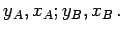

Inhalt Index DeskTop Bronstein

 Geometrie Ebene Trigonometrie Geodätische Anwendungen Vermessungstechnische Anwendungen
Geometrie Ebene Trigonometrie Geodätische Anwendungen Vermessungstechnische Anwendungen


Man spricht auch von der 1. Hauptaufgabe der Triangulierung. Dabei geht es um die Bestimmung eines Neupunktes N von zwei gegebenen Punkten A und B aus in einem Dreieck ABN.
Gegeben:  Gemessen: möglichst auch  oder .
oder .
Gesucht: 
Lösung:
| (3.114b) |
| (3.114c) |
| (3.114d) |
| (3.114e) |
 |
(3.114f) |
| (3.114g) |
| (3.114h) |